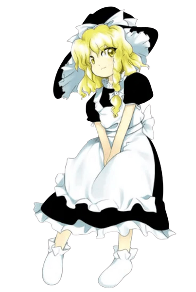

← Вернуться на главную ← Предыдущий Следующий →
О персонажеМариса Кирисаме — обычная человеческая волшебница, живущая в Волшебном лесу. Она открыто признаёт, что уступает Рейму, поэтому с гордостью называет себя «второй по силе в Деревне людей» и постоянно ищет способы стать мощнее. В отличие от Рейму, у неё нет врождённого таланта, и всего она добилась упорным трудом. ХарактерПо натуре Мариса очень общительна, прямолинейна и неформальна. Она легко находит общий язык как с людьми, так и с ёкаями, и всегда готова ввязаться в авантюру, если увидит что-то интересное. В прошлом она слыла заядлой вруньей (однажды при встрече с Фландр она даже в шутку представилась её сестрой, Ремилией), за что её отчитывала судья Эйки Сики — но со временем Мариса стала заметно честнее. Она обожает коллекционировать редкие и магические вещи, из-за чего её дом превратился в жуткий склад хлама. Мариса терпеть не может уборку и порой сама не помнит, что именно хранится в её закромах — однажды она даже нашла легендарный меч Кусанаги, но приняла его за старую железку и отдала Ринносукэ в обмен на починку своего Мини-Хаккеро. Магия и трудолюбиеНесмотря на профессию волшебницы, Мариса обладает отличной физической силой и выносливостью. Она тщательно скрывает от окружающих, как много тренируется и изучает гримуары, предпочитая делать вид, что всё даётся ей играючи. Её магия строится на стихиях света и тепла, а визитной карточкой стал разрушительный луч «Master Spark». Работа и хоббиМариса держит «Магазин волшебных предметов Кирисаме», где берётся за «любые поручения», однако из-за глуши Волшебного леса клиентов у неё почти нет. Поэтому она нередко перехватывает у Рейму заказы на истребление ёкаев. Кроме того, у неё репутация неисправимой воровки (сама она утверждает, что «просто берёт вещи на время»): Мариса без спроса уносит книги и артефакты у знакомых, оправдываясь тем, что её друзья-ёкаи живут гораздо дольше людей и всё равно заберут вещи назад после её смерти. |
 |
Способности
Снаряжение
|